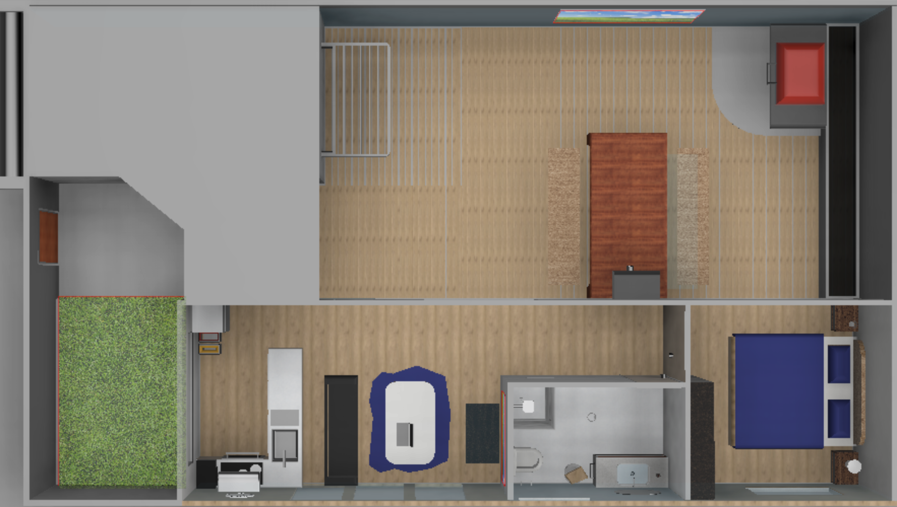
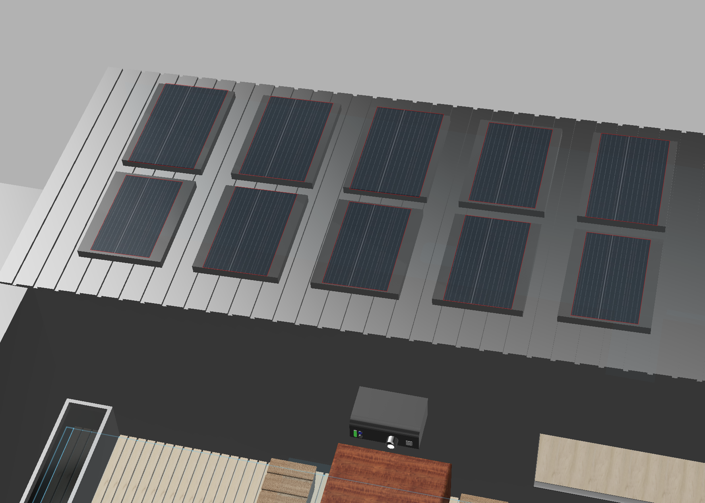
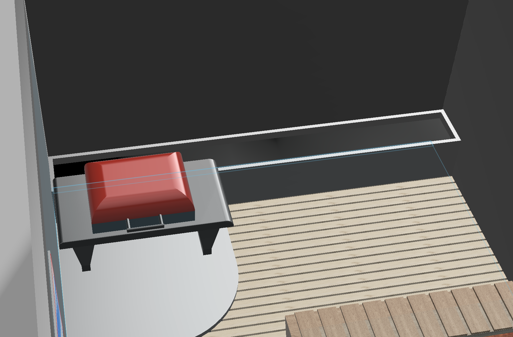
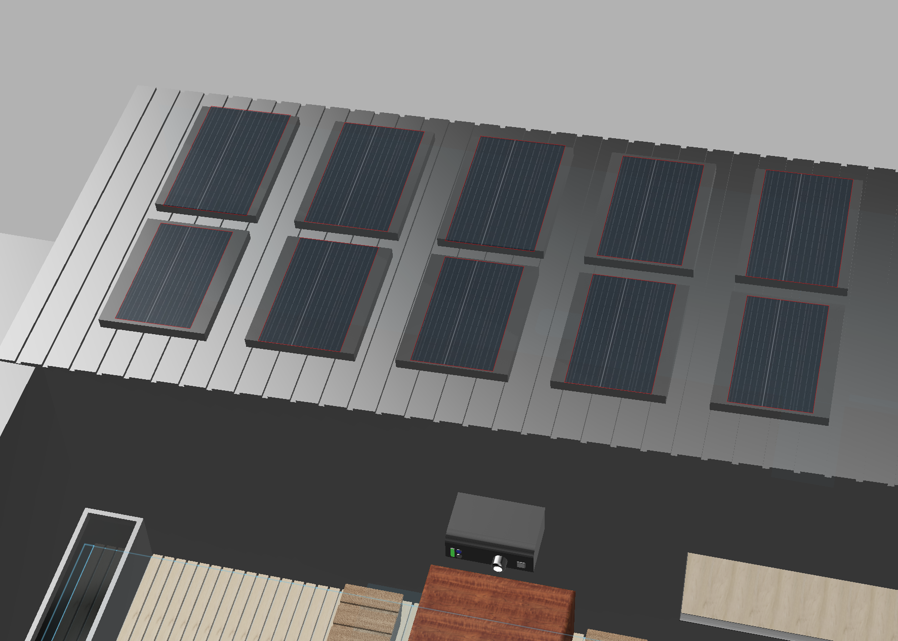
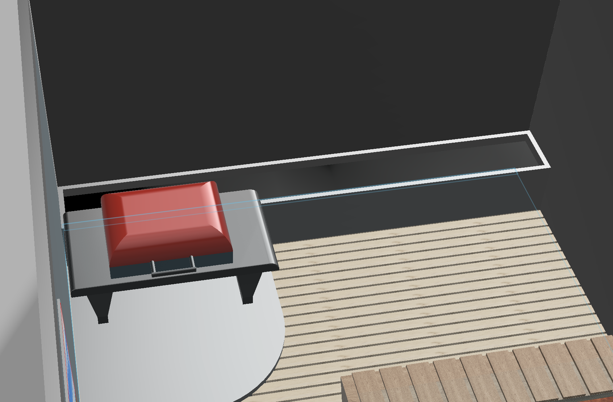

Overview
A modern, luxurious & secure tiny home featuring a large patio space for events, entertainment and a BBQ area with a flowing, efficient setup, complimenting those who run on tight schedules. Privacy & security is a high, integrated with 24/7 security monitoring, ensuring that your home is safe and secure, removing any stressors when away from home. A perfect blend of greenery and elegance with low energy, water and maintenance cost, leaving you with a great long-term investment.
Entertain guests/family with a perplexing, cosy atmosphere, BBQ, and an outdoor cinema experience, while enjoying the privacy and comfort of your own home.
Positioned on a corner block, the property offers ocean views and a one-minute walk to the beach. This tiny house is a perfect location for those who want to relax, at a cheap and affordable price.




 


